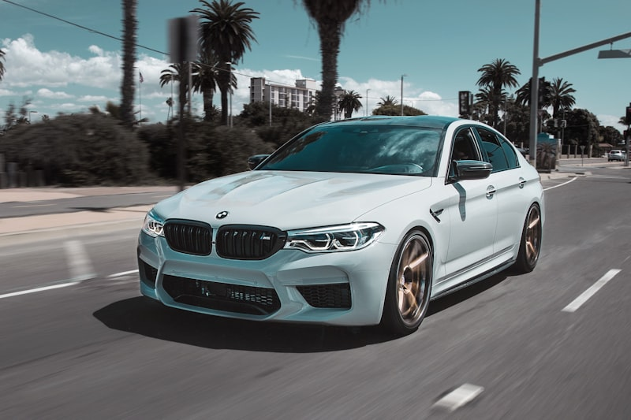

BMW Repair & Service in Cedar Rapids
European specialist expertise — dealer-level diagnostics without the dealer price tag.
Specialized BMW Repair in Cedar Rapids
BMWs are precision-engineered vehicles that demand more than a generic approach to maintenance and repair. At Cedar Automotive, we specialize in European vehicles and carry the dealer-level diagnostic equipment needed to properly service every BMW system. From reading manufacturer-specific fault codes across all BMW modules to performing advanced procedures like VANOS timing corrections and Valvetronic recalibrations, we handle the work that most independent shops in Cedar Rapids simply cannot.
BMW engines are built to tight tolerances and rely on complex systems that interact closely with one another. Cooling system failures can cascade into head gasket damage. A neglected oil service can lead to timing chain stretch and catastrophic engine failure. Electrical faults can trigger limp mode and leave you stranded. Our technicians understand how these BMW-specific systems work together, so we catch developing problems early and address root causes — not just symptoms.
Whether you drive a 3 Series daily commuter, an X5 family hauler, or an M car you only take out on weekends, Cedar Automotive gives you the quality of service your BMW was built to receive — at a fair price, with honest communication every step of the way. We are conveniently located in Cedar Rapids near the regional airport and serve BMW owners across Eastern Iowa.
BMW Services We Provide
- BMW oil service with manufacturer-approved synthetic oil and filters
- Brake pad and rotor replacement with electronic brake sensor reset
- Cooling system overhaul — water pump, thermostat, expansion tank, hoses
- Electrical diagnostics and fault code reading across all BMW modules
- VANOS variable valve timing diagnosis and repair
- Valvetronic system service and recalibration
- Suspension rebuild — control arms, thrust arms, bushings, struts
- Automatic and manual transmission service and repair
- BMW coding, programming, and module registration
- Fuel system service — injector cleaning, high-pressure fuel pump
- Car key and key fob programming

Why Choose Us for Your BMW?
European Specialist
We carry BMW-specific diagnostic scanners and specialty tools that communicate with every module in your vehicle — the same equipment used at the dealership.
Honest Pricing
Dealer-quality BMW service at independent shop rates. We explain every repair upfront and never upsell work your car does not need.
Modern Diagnostics
Our professional-grade scanners read manufacturer-specific fault codes, run active tests, and perform coding and programming — not just basic OBD-II scans.
Common BMW Issues We Repair
Oil Leaks
BMW valve cover gaskets, oil filter housing gaskets, and oil pan gaskets are prone to hardening and leaking over time. Left unaddressed, oil leaks can damage belts, wiring, and surrounding components. We identify the source and replace the failing gaskets with quality parts.
Cooling System Failures
BMW cooling systems use plastic components — expansion tanks, thermostat housings, and coolant pipe connectors — that become brittle with age and heat cycling. A failed water pump or cracked expansion tank can cause rapid overheating and serious engine damage. We replace these components proactively before they leave you on the side of the road.
Electrical Gremlins
BMWs have highly networked electrical systems with dozens of control modules communicating over multiple bus networks. Window regulators, door lock actuators, iDrive faults, battery drain issues, and random warning lights are all common. Our dealer-level diagnostics pinpoint the exact module or circuit at fault.
VANOS & Valvetronic Problems
The VANOS variable valve timing system and Valvetronic variable valve lift system are critical to BMW engine performance and efficiency. Worn VANOS seals, solenoid failures, and Valvetronic motor faults cause rough idle, poor power, and increased fuel consumption. We diagnose and repair both systems.
Suspension Wear
BMW front suspension control arms, thrust arms, and tie rods wear out — especially on 3 Series and 5 Series models with high mileage. Symptoms include clunking over bumps, vague steering, and uneven tire wear. We perform complete front-end rebuilds using OE-quality components to restore your BMW's handling.
Timing Chain & Guides
Certain BMW engines — particularly the N20 and N63 four- and eight-cylinder turbo engines — are known for premature timing chain and guide wear. Rattling on cold start or a stretched chain code requires prompt attention to avoid catastrophic engine failure. We replace timing chains, guides, and tensioners as a complete kit.
Related Services
Frequently Asked Questions
Do you use BMW-specific diagnostic equipment?
Yes. Cedar Automotive carries dealer-level diagnostic scanners that communicate with all BMW modules — engine, transmission, ABS, airbag, VANOS, Valvetronic, and body electronics. We read the same manufacturer-specific fault codes that the BMW dealership sees, not just generic OBD-II codes.
Is independent BMW repair cheaper than the dealership?
In most cases, yes. Cedar Automotive provides the same quality of service using equivalent diagnostic tools and OE-grade parts, but our labor rates are significantly lower than dealership pricing. You get dealer-level expertise without the dealer-level bill.
What BMW models do you service?
We service all BMW models including the 1, 2, 3, 4, 5, 6, 7, and 8 Series sedans and coupes, X1 through X7 SUVs, Z4 roadsters, and M Performance vehicles. We also work on MINI Cooper models. Whether you have a newer F or G chassis or an older E-chassis BMW, we have the tools and experience to work on it.
Do you program BMW keys and fobs?
Yes — we program BMW keys, key fobs, and proximity comfort access fobs at a fraction of dealership cost. BMW key programming requires manufacturer-level diagnostic access that most locksmiths don't have. Whether you need a spare key, a replacement fob, or all-keys-lost programming, Cedar Automotive has the equipment to handle it. Call (319) 450-7584 for a quote.